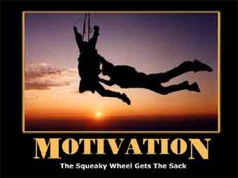
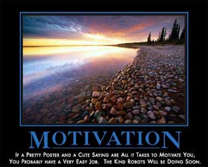

WilyWalnut.com
Meet the Genius in YOUR Brain!
GENIUS ARTICLES HOME - IQ TESTS - CREATIVITY - GENIUS - BRAIN STORMING - BLOG Motivate Your Mind:How to Get Motivated When Your Self Motivation is WeakIn this article on motivation, we will explore what it takes to motivate your mind when you are really down in the dumps and feeling at your least creative. Self motivation is an essential skill for anyone working in creative fields, as you require a constant renewal of impetus to push forward to new ground. Learning to get motivated when and where you want to, rather than waiting for the muse to strike or enthusiasm to re-ignite, will put you in charge of your creative output. The motivated mind gets a lot more done, and what it creates is of a higher order than that which is produced under duress or slothfulness! So are you ready to get motivated? I know I am, so let's begin....
First, a confession. You know when Sir Isaac Newton was talking about his First Law of Motion, and he mentions 'a body at rest' and how it won't move unless it is acted upon by an outside force? I think he was talking about ME! For much of my life, I have been the least motivated of individuals. I waited for inspiration to strike. Or let my fate be largely determined by others. I was that body at rest. Only it wasn't really rest; it was inertia. I would slump to a standstill and wait for the next puff of wind to fill my sails again. When I was inspired and fired up, I would be bursting with energy and really purposeful. It was easy in that state to feel totally motivated and action orientated. However, once that energy had run it's course, or evaporated, or the purpose been achieved and completed, then all too frequently I would crash into the doldrums. Have you been there? It's not a fun place, is it? We all get an initial high of energy when we start out on something new. Whether it's tackling those New Year's resolutions, deciding to go to the Gym, or launching a new business idea, there is plenty of energy in the initial thinking stages or even in the first few actions towards its achievement, but what happens when your energy and enthusiasm start to sag? First you get distracted and you forget your promise to yourself. Maybe you miss out on a couple of appointments at the gym, or fail to carry through on those essential marketing tasks to get your business up and running. A few days go by and then you remember what you are supposed to be doing. But this time, instead of it being a WANT-TO, it's become a SHOULD-DO! Uh-oh... now you're up against the wall. Now you are in desperate need of something to motivate you again. What is motivation, anyway?Let's look at this word motivation and give ourselves a clearer understanding of what it means. When I look at it, I immediately see the first three or four letters and it reminds me of 'motor' and 'motion'. The motor in motivation is the engine that drives you forward into motion. That 'va' in the middle there reminds me of Spanish for 'go' or 'goes', so again we have the sense that motivation gets you going. It's all about getting you out of that state of inertia and into motion. Now, next I see the word 'motive' in motivation, and it reminds me of all those murder-mystery tv shows and movies that I have watched over the years. The detective is always trying to figure out what the murderer's motive was. Why did he do it? What reason drove him to that senseless act? So motive is all about our sense of purpose, the reason that motivates us into action. Let's look at how an online dictionary defines the word: motivation :
So, from that we can appreciate that self motivation has to come from within. We need to find or create that 'psychological feature' which arouses us to action.
Let's go back to Sir Isaac Newton again and his three laws of Motion. Here they are:
How this applies to self-motivation: There's an old saying in England, 'If you want something done, ask a busy man.' Someone who is already busily in motion, finds it easier to tackle a new job than someone who is static and doing nothing. This means that once you do get yourself going, it will take less effort to keep yourself going than it will to get yourself going from a standing start. When you are motivated, you need to keep giving yourself little pushes, little reminders to keep it up, to keep on going. It's like spinning a plate balanced on a pole. To begin with you have to spin it many times to get it going, then you can just spin it once every few seconds to keep it in motion. If you don't give it a spin every now and then, it will start to slow down, wobble and fall off. Now if you are the object at rest, you have to understand that it will take a big push to get yourself or your project going, but once it is going, it will be a lot easier to maintain the momentum if you keep 'tickling' it along. So to get motivated just get into motion! Do something! Anything! Do something that takes you a baby step towards your target, and then take another baby step, and another, and you'll find that you get faster and start taking bigger steps. Stir yourself, get yourself revved up with emotion, excitement, enthusiasm, determination and act! act! act! That is the key to self motivation: get going.
How this applies to getting motivated: The 'net force' here is your motive, your reasons for doing what you want to do. The stonger your reason for doing something, the more power and energy you will bring towards doing it. Your purpose is what you are aiming for, and all the energy of your motive will move you towards what you are aiming for. Often the secret of motivating yourself is simply to remind yourself WHY you were interested in pursuing this course of action in the first place. Once you get back in touch with your motives and reasons for doing something, you will be back in touch with the energy and impetus to do it. The more reasons for doing something that you can come up with, the more motiv-ational power you will have to draw upon.
How this applies to motivating yourself on a consistent basis: I'm not sure if it is just a generational thing but, as a society, we are getting lazier by inclination. We want everything to be easy, instant, comfortable and without any problems whatsoever. We are sold on the instant fame of reality TV, the instant riches of the Lottery and so, for many of us, we are just not 'braced' for hard work and overcoming resistance. But Newton's third law of motion tells us that when we want to get something going and get it into motion, there will be an equal and opposite force resisting us. So, what that means is that you are going to have to push hard, and then push even harder, and then harder still to get your project (or yourself) into motion. And you will have to keep pushing regularly to keep it in motion because if you let it coast, the forces of resistance will slow it's progress down and eventually cause it to stop. And we don't want that, do we? Now you are probably picturing this never-ending slog ahead of you now, and feeling even less motivated than before. Let me reassure you that, in pragmatic terms, although you do have to battle to get the ball rolling, once things are in motion you can often reach a breakthrough moment where the resistance seems to disappear. This is the 'rolling stone gathers no moss' moment where your momentum, and your maintainance 'tickling', acquires a kind of effortlessness. Sure you are still doing stuff but it seems easier. People start responding to your offers, the money rolls in, and you feel like you have clicked into your niche. Somehow you have crossed the threshold. The Universe seems to sit up and take notice and say, "This gal is serious!" and begins to help you in extraordinary ways. What a terrific moment this is! But when you reach this stage, ignore the tendency to think that you've arrived and that you're done... because that is a sure way to crash and burn like so many celebrities and companies who hit the big time and then fall off the chart. You have to adjust your targets when it gets easier and start aiming even higher again. The resistance becomes your ally.  Get Motivated, Flex Your MindOkay, let's return to the focus of the article, how YOU can get motivated when you feel about as purposeful as a sack of doo-doo. Low motivation creeps up on you when you are not looking, doesn't it? One minute you were firing on all cylinders, the next you are stalled on the hard shoulder with a smoking engine. What happened? You took your eye off the ball, you forgot to stay in motion, you didn't do what you needed to do to keep your plate spinning in the air. (God, listen to me mangling metaphors! But you get the picture, right?) When you get distracted or lose focus, that's when you stall. To get motivated, you need to get sharply back in focus, get your eyes on the prize, get back in tune with your purpose and mission. For me, low motivation is experienced as laziness, procrastination, confusion, anxiety, guilt (hey, I should be working, right?!). And most of my low motivation is down to poor decision making regarding my goals, wants and aims --- and this results in a lack of clarity and I kind of whirr off into a frenzied anxiety attack that eventually defaults into a kind of low energy, depressed state. I wouldn't say I become a total zombie, but I might as well be one for all I achieve of worth in that state. And that semi-vegetative state alternating with anxious maddening thinking persists until... ...I give myself a big psychic kick in the butt!!! Really, it's just common sense, if your mind has strayed off the path, you shout and boss it back onto the path again! It's called self-discipline. And if you are in a whiney state of mind right now, I know that you will read the words 'self-discipline' and flinch from it like it's a bell-wearing leper! But inject some steel into your soul right now, and decide to get serious. Get organised with your thinking. You need to adopt a kind of 'clip-boardy' officiousness for a while, just so you can sort your thinking out and get some clarity back in your mind. Boot out the whiney, weak, tired voice in your head. The thoughts in your head, right now, determine the 'frame' or filter through which you view the world. Change the thoughts and you change the frame. Now, there is a difference between the thoughts that you think consciously and deliberately, and those thoughts which you just allow the stream of consciousness (from the non-conscious aspects of your mind) to carry into your mind space. When you default to laziness, the thought stream just does its own thing, and if you are regularly exposed to a lot of negative media (tv news, newspapers and magazines, hollywood movies, tv shows) you will end up with a polluted thought stream of negativity. And this will keep you down, until some starburst of inspiration fires you up again. (...Hope springs eternal!) But you don't have to accept this negative state. You can start to think consciously. Deliberately. Organising your mind and actions. Immediately you do this you will start to feel more motivated. You will remember your projects, those great ideas that you wanted to initiate. And you will get back on track. You will get motivated. Naffirmations ...Updated, Modernised, New! One of the tools you can use to get motivated is to repeat or write afirmations. Now affirmations have taken quite a bashing lately and are kind of poo-pooed by those with in-depth knowledge of how the mind works. That said, many people throughout history have derived benefits from them. I think of them as a focusing tool to deliberately steer your wayward mind back onto the path that you want it to follow. To get maximum benefit from them I like to use affirmations that create pictures in your mind. Repeating a phrase over and over is not going to change your life, but if that phrase triggers a picture in your mind over and over, that will provide much greater impetus to making changes. It just gives you a mental map to focus on and immediately you can begin to see yourself in a different way. For example: Creaky, old style affirmation: I am highly motivated Super-duper affirmation: I can see myself taking dynamic action, in a purposeful, powerful way. Rusting hulk, ye olde worlde affirmation: I am committed to getting this project finished. Truly-scrumptious updated affirmation: Wow! I can see myself loving this project and joyfully working on it and celebrating getting it finished. The key to creating these kind of imagery based powerthoughts is to MAKE SURE YOU DO PICTURE YOURSELF doing whatever the affirmation is about. If you would like to read more about why this is so effective, please refer to the classic book, PyschoCybernetics by Maxwell Maltz, Chapter 3, Imagination -- The First Key To Your Success Mechanism.  Motivating On Many LevelsWhile my personal wrestling match with motivation involves lack of clarity, many people get perfectly clear on their goals but still can't summon enough vital motivation force to get off their butts and really move towards their goals. Here are some additional reasons then, why you may be suffering from a lack of motivation and what you can do to get yourself motivated again.... Living Somebody Else's Dream The media also fosters false dreams and illusory goals upon us. By constant exposure to the repetition of standard images of what success is, we all come to believe that we want to be popstars, movie stars, models, business titans or sports idols. And these are false dreams. If you hadn't been exposed to them via TV and movies, would these be important to you? Would you still be hankering after the illusion that you could be the best and greatest singer in the world? Would you still be waiting to be discovered by a Hollywood director? Or would you be more in touch with your natural inclination to learn about designing clothes, making clocks, looking after and training horses ... or whatever your particular gift might have been if you hadn't ignored it in favor of the idea of becoming the richest man in the world by this time next Thursday! To counter false dreams, examine your life and the goals you have. Expose them to the cruel light of reality. Are you just riding a media bandwagon, sold on an illusion of instant fame and fortune? Are you living your life to please your parents and be a good girl? Isn't it time you grew out of those kind of attitudes and limitations. Allow yourself to explore what is really in your core. What do you really want? What do you really love doing? If you don't know, start trying different things and see where they lead you. Go ballroom dancing, abseiling, yachting, enroll in a web design course, try your hand at macrame or online poker. Blockages and Barriers to Motivation You may need to clear out old relationships too if those people are really blocking your progress. However, it is amazing how people seem to change when we take responsibility for changing ourselves. You may be carrying a lot of inner baggage and psychic clutter accumulated over a lifetime. To release all that blocked energy, you would do well to practice the Sedona Method of releasing. This is a very subtle and very effective technique for letting go of trapped energy. You basically identify the feeling you want to release and ask yourself a short series of questions that prepare your mind, draw the trapped energy into awareness and bring it into focus before releasing and letting go of the energy that you had been psychically holding onto in your energy body (or subsconscious mind). To explore this further, refer to the Sedona Method website: Low Physical Energy Equals Low Motivation More Tips To Get Yourself MotivatedPut the pain behind you Once upon a time, my wife and I decided to give up chocolate for a year. We'd got a bit addicted to it. Initially we found it hard to stick with our decision. It was all too easy just to give up and buy that bar when it was sitting there at the counter. So we came up with a deal. We would have to give the other £50 if we succumbed to eating chocolate. Well, £50 seemed like a lot of money and the idea of paying out that much for a stupid piece of chocolate... well, that put the pain right there at our heels and was sufficent motivation to keep up to our deal throughout the year. What punishment can you put at your back, to drive you forwards even when you feel like quitting? Here are some ideas for painful motivational tools:
Life is a one time opportunity. Look at the 'amount of lifetime' chart on: Creative Fun and Games With The Grim Reaper! How to use DEATH to inspire creative living!! It's a great tool for seeing and feeling the pain of lost time and missed opportunity, and rediscovering your self motivation. Expand your duties: make habits of success Now the way we do that is that you need to stand up. Okay, are you standing up? Make sure you stand up. Humour me... Okay, so you are standing up, and now I will wave my magic wand and turn all those actions you need to take into habits that you just do without thinking about it. Abracadabra, allacazam! There now that's fixed, isn't it? No, of course it isn't. I'm sorry, there is no special technique to this, other than the ones you manufacture for yourself to make this easier in your mind.... You just have to do the actions, and do them again, and do them again, until you get in the habit of doing them every day. Let's say you want to write a book. But you have been stalling big time. It seems you get distracted at every turn. You just can't muster the determination to start. You need to just do it. Decide that you will get up at 5AM and write for an hour. Everyday. That's it. The decision is in stone. It's now part of your life, and it's a duty that you just carry out, because it's what you do, it's who you are. And you do it today. You do it tomorrow. And you keep on doing it everyday, just as you brush your teeth every day, and feed your dog every day. It's just something you do everyday. Once you click into this mindset, motivation becomes effortless. You've accepted the tasks and have no resistance against them. The motivating power of perspective Much of the time we live our lives, 'millimetres from the sandy hair' oblivious to the lions in our lives. We cling to a myopic attachment to immediate gratification which is tantamount to delighting in the softness of the fur. And we ignore the big meaty-breathed beast ('the future') that could turn round and gobble us up at any moment. But when you change the perspective, and look at the big picture, you can spot the lions and you'll take appropriate action (like plotting a route that goes away from the lions or around them, or buying something to scare them away). The power of perspective enables you to see:
As previously stated, life is a limited amount of time and opportunity. This day once gone will never ever exist again. Use the power of perspective to motivate yourself and create strong motivating intention to do what you must do. The fog of dreams versus the light of reality In this sort of situation, you need to get on top of the dream. You need to actually go to the end result, the completed vision, and ask yourself, "What would I have to have done to reach here?" And you work backwards from there figuring out all the steps you would have taken. What was the step just before you achieved this completed vision? What was the step before that and before that? And you create a written step-by-step plan that leads back to this moment now. And then you have something real and tangible, that you know that you can start on today. You have your first step. And if that first step seems too big, you break it down into a series of smaller steps. But you start today, you get moving on it, and you push yourself hard until the momentum of it starts to carry you along. Then the motor in your motivation will be purring along on all cylinders! Rate this article: I'd love to hear from YOU! Email me: wily[at]wilywalnut.com Motivation ResourcesThe Zufelt Experience: Jack Zufelt's extraordinary seminars on unlocking your motivation for peak performance. Motivation 123: "Motivation techniques & tips for your happiness and success." A great site devoted entirely to the topic of motivation. Motivation: Wickipedia's take on the subject. Motivation Tool Chest: Promises to help you develop productive skills through self-discovery. Works to the premise that the source of motivation is found through discovering and developing your natural talent. Motivation for smart people: Steve Pavlina's personal development articles are always right on the ball and full of wisdom, insight and practical ideas. Here he tackles motivation (without chest pounding!).
Wily Walnut is the headbrain at http://www.WilyWalnut.com, your top resource for unleashing the genius within, becoming infinitely creative, intelligent and brilliant in all that you do! GENIUS ARTICLES HOME IQ TESTS - CREATIVITY - GENIUS - BRAIN STORMING - SELF-HELP - BRAINTEASERS - WILY WALNUT | ||
|


"Unleash Your Inner Genius For Creativity & Innovation!" Copyright 2001-2015 WilyWalnut.com SITE MAP